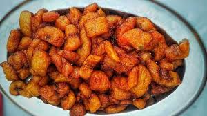
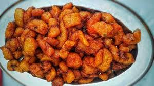
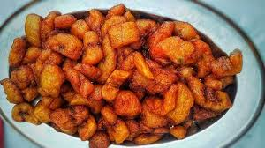

Mes Plats préféré
 


Ils sont principalement ivoirien
La sauce graine est une sauce faite à base de graine de palme
Le deuxieème bah, on l'imagine bien !
et l'alloco, c'est la banane plantain frie

La sauce graine est une sauce faite à base de graine de palme
Le deuxieème bah, on l'imagine bien !
et l'alloco, c'est la banane plantain frie